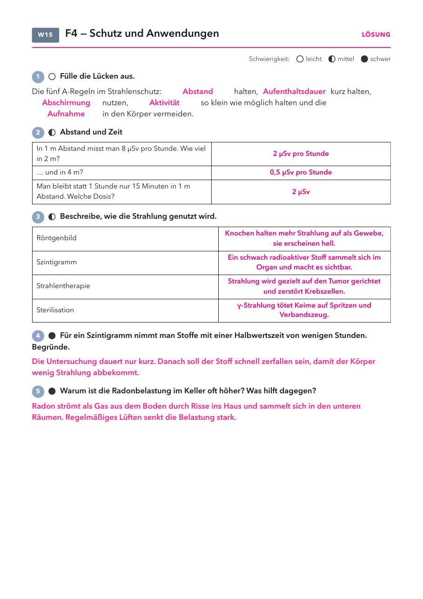

Klasse 10 · Physik · W15 (Woche ab 11.01.2027) · Abschluss Leitfrage 4
| Material | Anzahl | Hinweis |
|---|---|---|
| Röntgenbilder | einige | als Anschauung |
| Material | Anzahl | Hinweis |
|---|---|---|
| nicht nötig | ||
1) Warum heißt die Strahlung „ionisierend"?
2) Du verdoppelst deinen Abstand zur Quelle. Was passiert mit der Dosis?

| Ort | was man misst | warum |
|---|---|---|
| Keller und Erdgeschoss | höchste Werte | Das Gas strömt aus dem Boden durch Risse ins Haus. |
| Granit, z. B. im Schwarzwald | mehr Radon im Boden | Das Gestein enthält mehr Uran. |
| gut gedämmter Neubau | oft mehr Radon in der Luft | Die dichte Hülle tauscht weniger Luft aus. |
| Stoßlüften | Werte sinken schnell | die einfachste und wirksamste Maßnahme |
Lösung: Abstand, Aufenthaltsdauer, Abschirmung, Aktivität, Aufnahme. 2 µSv, 0,5 µSv, 2 µSv. Anwendungen siehe Lösungsseite. Kurze Halbwertszeit: wenig Dosis nach der Untersuchung. Radon: aus dem Boden, lüften.